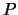

The program cdd+ (cdd, respectively) is
a C++ (ANSI C) implementation of
the Double Description Method [MRTT53]
for generating all vertices (i.e. extreme points)
and extreme rays of a general
convex polyhedron given by a system of linear inequalities:
One useful feature of cdd/cdd+ is its capability
of handling the dual (reverse) problem without any transformation
of data. The dual problem is known to be the
(convex) hull problem which
is to obtain a linear inequality representation
of a convex polyhedron given as the Minkowski sum of
the convex hull of a finite set of points and the nonnegative
hull of a finite set of points in  :
:
 , where
the Minkowski sum of two subsets and of
, where
the Minkowski sum of two subsets and of  is defined
as
.
As we see in this manual, the computation can be done
in straightforward manner. There is one assumption for the input
for hull computation: the polyhedron must be full-dimensional.
is defined
as
.
As we see in this manual, the computation can be done
in straightforward manner. There is one assumption for the input
for hull computation: the polyhedron must be full-dimensional.
Besides these basic functions, cdd/cdd+ can solve the general
linear programming (LP) problem to maximize (or minimize) a linear
function over polyhedron . It is useful mainly for solving
dense LP's with large  (say, up to few hundred thousands) and small
(say, up to few hundred thousands) and small  (say, up to 100).
(say, up to 100).
The program cdd+ is a C++ program, converted from the ANSI C program cdd in 1995. Both programs have been updated for a few times since then. One major advantage of this C++-version over the C version is that it can be compiled for both rational (exact) arithmetic and floating point arithmetic. Note that cdd runs on floating arithmetic only. Since cdd+ uses GNU g++ library, in particular Rational library, one needs a recent (2.6.3 or higher) gcc compiler and g++-lib. One should be also warned that the computation can be considerably (10 - 100 times or even more) slower if the rational arithmetic is used. My idea is to keep the ANSI C code cdd as simple as as possible, while the C++ code cdd+ will be used to be an experimental platform to test new ideas.
The program cdd/cdd+ reads input and writes output in Polyhedra format which was defined by David Avis and the author in 1993, and has been updated in 1997. The program called lrs [Avi97] developed by David Avis is a C-implementation of the reverse search algorithm [AF92] for the same enumeration purpose, and it conforms to Polyhedra format as well. Hopefully, this compatibility of the two programs enables users to use both programs for the same input files and to choose whichever is useful for their purposes. From our experiences with relatively large problems, the two methods are both useful and perhaps complementary to each other. In general, the program cdd+ tends to be efficient for highly degenerate inputs and the program rs tends to be efficient for nondegenerate or slightly degenerate problems.
Among the hardest problems that could be solved (in floating-point arithmetic) by cdd+ is a 21-dimensional hull problem given by 64 vertices. This polytope, known as the complete cut polytope on 7 points, has exactly 116,764 facets and some of facets contain many vertices. It took 205 hours (eight and half days!) for cdd to compute the facets exactly on a SUN SparkServer 1000. The input file (ccp7.ine) of this polytope is included in the distribution. A considerably easier problem is ccc7.ine which is a variation of the problem (see e.g. [Gri90]).
The size of an input file hardly indicates the degree of hardness of its vertex/ray enumeration. While this program can handle a highly degenerate problem (prodmT5.ine) with 711 inequalities in 19 dimension quite easily with the computation time 1-2 minutes on a fast workstation, a 8-dimensional problem (mit729-9.ine) with 729 inequalities can be extremely hard. It takes two days to compute all (only 4862) vertices by a SUN SparkServer 1000. The latter problem arises from the ground state analysis of a ternary alloy model, see [CGAF94]. Both input files are included in the distribution.
Although the program can be used for nondegenerate inputs, it might not be very efficient. For nondegenerate inputs, other available programs, such as the reverse search code lrs or qhull (developed by the Geometry Center), might be more efficient. See Section 11 for pointers to these codes. The paper [ABS97] contains many interesting results on polyhedral computation and experimental results on cdd+, lrs, qhull and porta.
This program can be distributed freely under the GNU GENERAL PUBLIC LICENSE. Please read the file COPYING carefully before using.
I will not take any responsibility of any problems you might have with this program. But I will be glad to receive bug reports or suggestions at the e-mail addresses above. Finally, if cdd+ turns out to be useful, please kindly inform me of what purposes cdd has been used for. I will be happy to include a list of applications in future distribution if I receive enough replies. The most powerful support for free software development is user's appreciation and collaboration.